UDN
Search public documentation:
ExampleParticleSystemsJP
English Translation
한국어
Interested in the Unreal Engine?
Visit the Unreal Technology site.
Looking for jobs and company info?
Check out the Epic games site.
Questions about support via UDN?
Contact the UDN Staff
한국어
Interested in the Unreal Engine?
Visit the Unreal Technology site.
Looking for jobs and company info?
Check out the Epic games site.
Questions about support via UDN?
Contact the UDN Staff
パーティクルシステムの例集
本書の概要：UDN Buildの新しいパーティクルシステムエミッターを使って、例を使っての、エミッターの作成のガイドです。 本書の変更記録：Jason Lentz (DemiurgeStudios?)により最後に更新。原著者は、Chris Linder、Tom Lin、Albert Reed (DemiurgeStudios?)。非支持表明
文書内のコードはUDN他のライセンス保持者へのサービスとして提供されています。Epic（エピック)に支持されてのものではありません。はじめに
パーティクルシステムのわかり易い例についての問い合わせを受けたのに答えて、 UDNBuildの中のParticle System Editor を使っての、プロダクションレベルのパーティクルシステムを、小さなライブラリ（図書館）として集めてみました。自分のプロジェクトでのスターティングポイントとして使ってください。テクスチャパック）や、メッシュパック、ソースファイルの例を、ただ提示するだけでなく、どうやったかの説明も載せました説明。このページが好評でしたら、さらにこういったページを増やす予定です。ですから、リクエストがもしありましたら、ご遠慮なく al@demiurgestudios.com までお知らせください。 #エミッターの例エミッターの例
記述された例は皆、#例集ダウンロードから入手できます。Spell Ring （スペルリング、魔法円）
Tom Lin 著 UTの中でのパーティクル効果において、一番わくわくするのは、パーティクルの既成概念に当てはまらないことが、広い分野において存在することではないかと思います。スペルリングはそのよい例です。
スペルリングは３つのエミッターで構成されています。このシステムはほとんどイメージ編集プログラムを使って作成されました。まず、Photoshop を使って、グラウンドプレーン（地面）で使われる2枚のイメージマップを作成しました。リングの1つがそれ自体でどのように見えるかをお見せします：
UTの中でのパーティクル効果において、一番わくわくするのは、パーティクルの既成概念に当てはまらないことが、広い分野において存在することではないかと思います。スペルリングはそのよい例です。
スペルリングは３つのエミッターで構成されています。このシステムはほとんどイメージ編集プログラムを使って作成されました。まず、Photoshop を使って、グラウンドプレーン（地面）で使われる2枚のイメージマップを作成しました。リングの1つがそれ自体でどのように見えるかをお見せします：
 外側のリングはただ1つの長いライフスパン（寿命）のパーティクルでできています。ここでは、編集プログラムの中で、注目するべきオプションは余りありません（サイズは定数のままですし、動きもありません、など）。しかしローテーション（回転）は重要です。 はじめのステップは、回転が存在するかを、スピンパーティクルのボックスでチェックすることです。1秒あたりのスピン数はとても低くセットされています。このリングの場合は0.01以下で十分です。もう1つ重要なのは、スピンがCCW か CW スライダーかということです。 これによって、一方向にスピンするパーセンテージ（割合）が決まります。75%であれば、その時間内で、75%の時間は時計回りに、25%の時間は反時計回りにスピンします。このリングに関しては、0%にセットしました。最後に、 Specified Normal （ノーマルに特定）はリング自体の向きの設定でZ値が1.0です。
2番目のリングの設定は、基本的には一番目のと同じです。ただし、スピンの方向が違います。内側のリングは100%時計回りにセットされているので、リング同士は、常に逆方向にスピンします。リングのサイズは Photoshopを使って、適切に設定しました。ですから編集プログラムにインポートしたときには、デフォルトのサイズで皆きれいに収まりました。
このシステムの最後のほうは、単に上に動き時間につれてフェードアウトする放射勾配のテクスチャです。
視覚効果をあげるため、2番目のリングは何回か複製されて、周期的にスポーンするようになっています。そして、最終的に、Color Scale （カラースケール）を使って、両リングとも時間につれて赤くなるようにしてあります。
外側のリングはただ1つの長いライフスパン（寿命）のパーティクルでできています。ここでは、編集プログラムの中で、注目するべきオプションは余りありません（サイズは定数のままですし、動きもありません、など）。しかしローテーション（回転）は重要です。 はじめのステップは、回転が存在するかを、スピンパーティクルのボックスでチェックすることです。1秒あたりのスピン数はとても低くセットされています。このリングの場合は0.01以下で十分です。もう1つ重要なのは、スピンがCCW か CW スライダーかということです。 これによって、一方向にスピンするパーセンテージ（割合）が決まります。75%であれば、その時間内で、75%の時間は時計回りに、25%の時間は反時計回りにスピンします。このリングに関しては、0%にセットしました。最後に、 Specified Normal （ノーマルに特定）はリング自体の向きの設定でZ値が1.0です。
2番目のリングの設定は、基本的には一番目のと同じです。ただし、スピンの方向が違います。内側のリングは100%時計回りにセットされているので、リング同士は、常に逆方向にスピンします。リングのサイズは Photoshopを使って、適切に設定しました。ですから編集プログラムにインポートしたときには、デフォルトのサイズで皆きれいに収まりました。
このシステムの最後のほうは、単に上に動き時間につれてフェードアウトする放射勾配のテクスチャです。
視覚効果をあげるため、2番目のリングは何回か複製されて、周期的にスポーンするようになっています。そして、最終的に、Color Scale （カラースケール）を使って、両リングとも時間につれて赤くなるようにしてあります。
Bubbles（バブル、泡）
Tom Lin 著 バブルは、パーティクルシステムを使って、割と簡単に作成できます。Final Fantasy （フィナルファンタジー)スタイルの Poisoned Indicator （毒を盛られたインディケーター）という苦しんでいるキャラクターから発せられる、途切れないバブルの流れの再生を試みました。これは、ちょっとした修正で石鹸の泡や水中の呼吸器（ダイビングレギュレーター）からもれてくるバブルの流れ、沼からのガスなどのシュミレーションに応用できます。
まずたった1つのスプライトエミッターに、複数のバブルがめちゃくちゃに表面に並んだアレンジのテクスチャを使いました。しかし、すぐに、不満が生じました。バブルがはじけると、多数のバブルがいっぺんに消えてしまいます。このため、テクスチャをマップあたり1つのバブルに制限して、必要に応じてパーティクル数を調整することをお勧めします。
そして、1つの大きなバブルで始めました。バブルが決まったパターンになるのを避けるために、パーティクル最多数を低く抑えました。半透明の描きスタイルを使いながら、不透明度を100%に設定しました。フェードイン時間を短く設定すると描きこみ画なくなりますが、別にフェードアウト時間の設定ができないため、バブルがはじけたときに、突然余韻なく消滅してしまいます。Pop（ポップ、はじけ）に関しては後述します。
バブルの動きのほかに、サイズを多様に設定するようにしてください。スタート地点を変えるのは使用目的によるオプションです。例えば、バブル杖から出てくるバブルは、バブル風呂のバブルより局所的です。
一番目のバブルが片付いたところで、後は多様性のために、もういくつかエミッターを追加するだけです。エミッターが多いほど、バブルのコントロールがうまくいきますが、若干のパフォーマンス上の欠点があります。
ではバブルのポップ（はじけ）の問題に戻りましょう。野望のある方は注目してください。はじけたときに単にバブルが突然消えてしまうのでも良いと言えばいいのですが、 Texture の下の Subdivisions を使って、ポップするバブルにキャラクターを加えることができます。私のバブルのテクスチャには2つのパート（部分）があります。丸いバブルとポップしているバブルです。 Number of U Divisions を2に、 Number of V Divisions を1に設定します。
バブルは、パーティクルシステムを使って、割と簡単に作成できます。Final Fantasy （フィナルファンタジー)スタイルの Poisoned Indicator （毒を盛られたインディケーター）という苦しんでいるキャラクターから発せられる、途切れないバブルの流れの再生を試みました。これは、ちょっとした修正で石鹸の泡や水中の呼吸器（ダイビングレギュレーター）からもれてくるバブルの流れ、沼からのガスなどのシュミレーションに応用できます。
まずたった1つのスプライトエミッターに、複数のバブルがめちゃくちゃに表面に並んだアレンジのテクスチャを使いました。しかし、すぐに、不満が生じました。バブルがはじけると、多数のバブルがいっぺんに消えてしまいます。このため、テクスチャをマップあたり1つのバブルに制限して、必要に応じてパーティクル数を調整することをお勧めします。
そして、1つの大きなバブルで始めました。バブルが決まったパターンになるのを避けるために、パーティクル最多数を低く抑えました。半透明の描きスタイルを使いながら、不透明度を100%に設定しました。フェードイン時間を短く設定すると描きこみ画なくなりますが、別にフェードアウト時間の設定ができないため、バブルがはじけたときに、突然余韻なく消滅してしまいます。Pop（ポップ、はじけ）に関しては後述します。
バブルの動きのほかに、サイズを多様に設定するようにしてください。スタート地点を変えるのは使用目的によるオプションです。例えば、バブル杖から出てくるバブルは、バブル風呂のバブルより局所的です。
一番目のバブルが片付いたところで、後は多様性のために、もういくつかエミッターを追加するだけです。エミッターが多いほど、バブルのコントロールがうまくいきますが、若干のパフォーマンス上の欠点があります。
ではバブルのポップ（はじけ）の問題に戻りましょう。野望のある方は注目してください。はじけたときに単にバブルが突然消えてしまうのでも良いと言えばいいのですが、 Texture の下の Subdivisions を使って、ポップするバブルにキャラクターを加えることができます。私のバブルのテクスチャには2つのパート（部分）があります。丸いバブルとポップしているバブルです。 Number of U Divisions を2に、 Number of V Divisions を1に設定します。
 これで、テクスチャが2つの Subdivisions （部分）に分かれました。右側と左側です。[Use Subdivision Scale] ボタンを使って、左半分のテクスチャがどの位の間、右側のテクスチャに変わる前に、とどまるかをコントロールすることができます。この場合、.98 （ライフタイムの98％は左側のテクスチャ） に設定しました。[Blend Between Subdivisions] ボックスは空白にしておきました。片側のテクスチャからもう片側のテクスチャに徐々にではなく突然変わるようにするためです。
これで、テクスチャが2つの Subdivisions （部分）に分かれました。右側と左側です。[Use Subdivision Scale] ボタンを使って、左半分のテクスチャがどの位の間、右側のテクスチャに変わる前に、とどまるかをコントロールすることができます。この場合、.98 （ライフタイムの98％は左側のテクスチャ） に設定しました。[Blend Between Subdivisions] ボックスは空白にしておきました。片側のテクスチャからもう片側のテクスチャに徐々にではなく突然変わるようにするためです。

Dirt Explosion （泥の爆発）
Tom Lin著 これは割りと率直なパーティクル概念です。地面の上にグレネード（小爆弾）が有って、ボンッと爆発します。具体的には、開けた地面（石や岩や土）をシミュレートして、メッシュエミッターを使って視的効果を出したいと思ったわけです。このシステムにはたくさんのパーツがありますが、複雑では有りません。パーティクルシステムは、総数105個のパーティクルで構成されています。これはたいした数ではありません。しかし、いっぺんにいくつもこういった事（爆発）がおきるのはあまりよいアイディアではありません。こういう大きなシステムを作成するときには、いつでも、1回毎にいくつ使われるかに注意して、エンジンのスローダウンを避けてください。
ではこのシステムに関して、一歩ごとに進みましょう。まず、目的とした大体の形は底部が広いある種のコラム（柱）で、遠くから見たら、ラフな円錐のように見える様なものです。中心となるコラムは、初めの泥が吹き上げられる様子を再現し、広がった底部は、初期のどちらかというと回りに吹き飛ぶパーティクルと爆発後に散らばっていく、パーティクルを扱います。そのほかに岩からの大きな塊が、あちこち、外側に爆発の原点から投げられる様子を求めました。
中心となる柱上の形は、2つのスプライトエミッターです。１番目は単純な岩石テクスチャで、2番目のは単純な煙テクスチャです。岩石テクスチャは小さめにおさえました。空中に放り投げられて、落ちてすぐに衝撃とともに跳ね返るためです。テクスチャのPlanar （プレナー）性質があまり目立たないことが重要です。エミッターの両方とも、すべての面において、標準的です。Rotation、Scale、Location、 Speed をAdd(追加）して視的反復を壊すことができます。 ただここでふれておきたいのは、[Movement] の各項です。 パーティクルが円上で外に動くようにするには、[Start Velocity] のX と Y をリンクしてリフレクトさせてください。 Z max start velocity の値が異常に高いことに注目してください。AccelerationのZ マイナス値もです。これは、石や泥のパーティクルが空中にとても速くにほうり投げ上げられてから、落ちてくる様子を再現するためです。
これは割りと率直なパーティクル概念です。地面の上にグレネード（小爆弾）が有って、ボンッと爆発します。具体的には、開けた地面（石や岩や土）をシミュレートして、メッシュエミッターを使って視的効果を出したいと思ったわけです。このシステムにはたくさんのパーツがありますが、複雑では有りません。パーティクルシステムは、総数105個のパーティクルで構成されています。これはたいした数ではありません。しかし、いっぺんにいくつもこういった事（爆発）がおきるのはあまりよいアイディアではありません。こういう大きなシステムを作成するときには、いつでも、1回毎にいくつ使われるかに注意して、エンジンのスローダウンを避けてください。
ではこのシステムに関して、一歩ごとに進みましょう。まず、目的とした大体の形は底部が広いある種のコラム（柱）で、遠くから見たら、ラフな円錐のように見える様なものです。中心となるコラムは、初めの泥が吹き上げられる様子を再現し、広がった底部は、初期のどちらかというと回りに吹き飛ぶパーティクルと爆発後に散らばっていく、パーティクルを扱います。そのほかに岩からの大きな塊が、あちこち、外側に爆発の原点から投げられる様子を求めました。
中心となる柱上の形は、2つのスプライトエミッターです。１番目は単純な岩石テクスチャで、2番目のは単純な煙テクスチャです。岩石テクスチャは小さめにおさえました。空中に放り投げられて、落ちてすぐに衝撃とともに跳ね返るためです。テクスチャのPlanar （プレナー）性質があまり目立たないことが重要です。エミッターの両方とも、すべての面において、標準的です。Rotation、Scale、Location、 Speed をAdd(追加）して視的反復を壊すことができます。 ただここでふれておきたいのは、[Movement] の各項です。 パーティクルが円上で外に動くようにするには、[Start Velocity] のX と Y をリンクしてリフレクトさせてください。 Z max start velocity の値が異常に高いことに注目してください。AccelerationのZ マイナス値もです。これは、石や泥のパーティクルが空中にとても速くにほうり投げ上げられてから、落ちてくる様子を再現するためです。
 底部の破片の広がりは上記の柱のときと似ています。岩石のテクスチャと煙のテクスチャでできています。岩石のテクスチャは大きめです。前の程高くは空中に放り投げられないためです。岩石を表すパーティクル自体がより大きく、いくつもくっついて固まっていたりします。煙のテクスチャは柱でのときと同じです。また、標準修正事項も同じです。この石は、重力はあっても、衝突はありません。煙は寿命の終わりに近づくにつれ、拡散を表すため、スケールが大きくなります。塵による雲をもじする際に重力は当てはめません。
このシステムの面白いところは、メッシュエミッターです。まず、 3D Studio を使って、小さい低ポリのロック（石）メッシュを作成し、テクスチャとして挿入しました。ロックテクスチャを必ずどこかのテクスチャパックに保存してください。そうしないとエディターが基本テクスチャで代替してしまいます。モーション（動き）のスタート速度をコラム用のパーティクルと同様に設定しました。XとYをリンクしてその値をリフレクトさせました。[Size] のタブの下の [Min] と [Max] の設定にかなりの幅を設けました。石の形やサイズに広がりを持たせるためです。最後に、ちょっとしたトリックです。石がポップアウトで消えるのではなくフェードアウトで消えていくようにしました。[Mesh] のタブの下、[Use Particle Color] のボックスをチェックしました。そして、[Color/Fading] タブに戻って、[Fading] に適切な値を入力しました。 石が消え行く前に、ちょっとの間、地面にとどまるようにしました。最後の最後に、[Collisions] （衝突）が On になっていることを確認して下さい。テクスチャの代わりにセクシーなメッシュが出てくるようでしたら、そういうわけです。わかっていただけるでしょうか。
底部の破片の広がりは上記の柱のときと似ています。岩石のテクスチャと煙のテクスチャでできています。岩石のテクスチャは大きめです。前の程高くは空中に放り投げられないためです。岩石を表すパーティクル自体がより大きく、いくつもくっついて固まっていたりします。煙のテクスチャは柱でのときと同じです。また、標準修正事項も同じです。この石は、重力はあっても、衝突はありません。煙は寿命の終わりに近づくにつれ、拡散を表すため、スケールが大きくなります。塵による雲をもじする際に重力は当てはめません。
このシステムの面白いところは、メッシュエミッターです。まず、 3D Studio を使って、小さい低ポリのロック（石）メッシュを作成し、テクスチャとして挿入しました。ロックテクスチャを必ずどこかのテクスチャパックに保存してください。そうしないとエディターが基本テクスチャで代替してしまいます。モーション（動き）のスタート速度をコラム用のパーティクルと同様に設定しました。XとYをリンクしてその値をリフレクトさせました。[Size] のタブの下の [Min] と [Max] の設定にかなりの幅を設けました。石の形やサイズに広がりを持たせるためです。最後に、ちょっとしたトリックです。石がポップアウトで消えるのではなくフェードアウトで消えていくようにしました。[Mesh] のタブの下、[Use Particle Color] のボックスをチェックしました。そして、[Color/Fading] タブに戻って、[Fading] に適切な値を入力しました。 石が消え行く前に、ちょっとの間、地面にとどまるようにしました。最後の最後に、[Collisions] （衝突）が On になっていることを確認して下さい。テクスチャの代わりにセクシーなメッシュが出てくるようでしたら、そういうわけです。わかっていただけるでしょうか。
Arc Welding （アーク溶接）
Tom Lin 著 アーク溶接は、スプライトとスパークの両方のエミッターを組み合わせて実験するのによいパーティクルシステムです。
中心となるスプライトから始めて、主となるアークライトからのフリッカリング（火花の散り様）を、エディター全体にまたがっての複数の入力フィールドを使って再現しました。[General] （全般）のタブの下で Number of Particles （パーティクル数）を低めに抑えました。フリッカリングをより効果的に演出するためです。Particles per Second （パーティクル数/秒）は高く、[Time] タブの下の Lifetime of the Particles （パーティクル寿命）はとても低く設定しました。結果として、定期的に途切れなく、1秒間当たり何回もパーティクルが生まれ、死にます。反復のし過ぎを避けるために、パーティクルの寿命、サイズ、ロケーションに範囲を設定しました。
次に、2つの別々のスプライトエミッターを使って、煙り/霧効果を作成しました。1つは単純な動きとフェード以外にはあまり何もなく、もう1つはもっと複雑にしました。ライトが溶接過程で発生するスモーク（煙り）ににフラッシュするのを再現するため、スモークのテクスチャマップの Subdivision Scale （部分スケール）を使いました。２つのUと２つのV部分があり、4つとも同じにブレンドしあいます。パーティクルのライフタイム（寿命）は約9秒と高く設定しました。2つのパーティクルを使って、あまり時間をたがえずにスポーン（誕生）するようにしました。ここからが難しくなります。[Texture] タブの下で、 Draw Style が Translucent に設定されていることを確認してください。[Color/Fading] タブの下の Color Scale には11のカラーポイントを設けました。ほとんどが黒が白をはさむ形のサンドイッチ状で、スケールの両側の端は単独の黒のバーです。Color Scale Repeats もとても高くしました。 これは、エミッターの透明度を、完全に透明から完全に見える状態への行ったり来たりの速度をとても速くし、フリッカーするライトを再現します。量エミッターとも高いウォームアップ時間と、高い秒あたりのウォームアップティック数で瞬時に始まるようになっています。
アーク溶接は、スプライトとスパークの両方のエミッターを組み合わせて実験するのによいパーティクルシステムです。
中心となるスプライトから始めて、主となるアークライトからのフリッカリング（火花の散り様）を、エディター全体にまたがっての複数の入力フィールドを使って再現しました。[General] （全般）のタブの下で Number of Particles （パーティクル数）を低めに抑えました。フリッカリングをより効果的に演出するためです。Particles per Second （パーティクル数/秒）は高く、[Time] タブの下の Lifetime of the Particles （パーティクル寿命）はとても低く設定しました。結果として、定期的に途切れなく、1秒間当たり何回もパーティクルが生まれ、死にます。反復のし過ぎを避けるために、パーティクルの寿命、サイズ、ロケーションに範囲を設定しました。
次に、2つの別々のスプライトエミッターを使って、煙り/霧効果を作成しました。1つは単純な動きとフェード以外にはあまり何もなく、もう1つはもっと複雑にしました。ライトが溶接過程で発生するスモーク（煙り）ににフラッシュするのを再現するため、スモークのテクスチャマップの Subdivision Scale （部分スケール）を使いました。２つのUと２つのV部分があり、4つとも同じにブレンドしあいます。パーティクルのライフタイム（寿命）は約9秒と高く設定しました。2つのパーティクルを使って、あまり時間をたがえずにスポーン（誕生）するようにしました。ここからが難しくなります。[Texture] タブの下で、 Draw Style が Translucent に設定されていることを確認してください。[Color/Fading] タブの下の Color Scale には11のカラーポイントを設けました。ほとんどが黒が白をはさむ形のサンドイッチ状で、スケールの両側の端は単独の黒のバーです。Color Scale Repeats もとても高くしました。 これは、エミッターの透明度を、完全に透明から完全に見える状態への行ったり来たりの速度をとても速くし、フリッカーするライトを再現します。量エミッターとも高いウォームアップ時間と、高い秒あたりのウォームアップティック数で瞬時に始まるようになっています。
 さて、スパークです。パーティクル数を比較的高く設定しました、約40です。パーティクルのテクスチャは重要な要素ではありません。単一ピクセルの幅のラインなた目、もっとも大事な事は、透明なビットが存在しないことです。もちろん特にそういうう風に設置したい場合を除いてです。私は全部白にして、Color Scale （カラースケール）を追加して、 時間につれて色が変化するようにしました。
Movement （動き）がスパークエミッターにとっての一番重要なセクションです。溶接の環境を作成していたため、スパークがすべての方向に生成されることを望みました。この効果を出すためには、XとYをリンクしてリフレクトしてください。そうすると、どんな値を入力してもリフレクトされます（例えば： X min -122、X max 122、Y min -122、Y max 122）という様にです。スパークが空中にほうり投げ上げられるようにするには（逆に下に向かって溶接表面にくっつくのではなく）、X Min と Max の値を常に正の値に設定しました。 Min を 55 に Max もっとずっと高く、440ぐらいです。違ったパーティクルによる上方向の動きに幅を持たせるためです。最後に、パーティクルが後で下方向にカーブして落ちるようにZ Acceleration（Zの重力加速度）に重い値が割り当てられています。
さて、スパークです。パーティクル数を比較的高く設定しました、約40です。パーティクルのテクスチャは重要な要素ではありません。単一ピクセルの幅のラインなた目、もっとも大事な事は、透明なビットが存在しないことです。もちろん特にそういうう風に設置したい場合を除いてです。私は全部白にして、Color Scale （カラースケール）を追加して、 時間につれて色が変化するようにしました。
Movement （動き）がスパークエミッターにとっての一番重要なセクションです。溶接の環境を作成していたため、スパークがすべての方向に生成されることを望みました。この効果を出すためには、XとYをリンクしてリフレクトしてください。そうすると、どんな値を入力してもリフレクトされます（例えば： X min -122、X max 122、Y min -122、Y max 122）という様にです。スパークが空中にほうり投げ上げられるようにするには（逆に下に向かって溶接表面にくっつくのではなく）、X Min と Max の値を常に正の値に設定しました。 Min を 55 に Max もっとずっと高く、440ぐらいです。違ったパーティクルによる上方向の動きに幅を持たせるためです。最後に、パーティクルが後で下方向にカーブして落ちるようにZ Acceleration（Zの重力加速度）に重い値が割り当てられています。
 スパークにとって時間は常識的な意味で重要な要素です。私のスパークは長くはありませんが、ライフタイムに多様性を持たして有ります。こうすると、スパークがより中心に固まる傾向があります。上方向に生成されるためです。しかしほとんどが重力で落ち始める前に死にます。そして、新しくパーティクルガスポーンして、代わって現れます。T
最後に Spark タブ自体についてです。Line Segment Range で全部かたづけられるかどうかが問題です。 UDN は以前に 5 での設定を薦めましたが、私のは 3 です。とはいえ、たいした違いは有りません。Time Between Segments が実は重要であるかもしれません。 数が低いほどラインが滑らかになります。この数を"低く"設定しましょう。お気に入りのの効果が得られるまでいろいろな値で試してください。 私はとてもとても低くしました。0.05未満です。
スパークにとって時間は常識的な意味で重要な要素です。私のスパークは長くはありませんが、ライフタイムに多様性を持たして有ります。こうすると、スパークがより中心に固まる傾向があります。上方向に生成されるためです。しかしほとんどが重力で落ち始める前に死にます。そして、新しくパーティクルガスポーンして、代わって現れます。T
最後に Spark タブ自体についてです。Line Segment Range で全部かたづけられるかどうかが問題です。 UDN は以前に 5 での設定を薦めましたが、私のは 3 です。とはいえ、たいした違いは有りません。Time Between Segments が実は重要であるかもしれません。 数が低いほどラインが滑らかになります。この数を"低く"設定しましょう。お気に入りのの効果が得られるまでいろいろな値で試してください。 私はとてもとても低くしました。0.05未満です。
Impact Explosion （インパクト爆発）
Chris Linder 著
爆発の作成過程
始めに、単純な、インパクト爆発を構築しました。約20パーティクル数で、あまりテクスチャメモリを使いません。こういった爆発は、 ロケット爆発から、刀同士の衝突に使えます。このパーティクルシステムの欠点は、主となる爆発が、いくつかの広告看板上のスプライトで構成されているため、爆発が壁の近くで起こると、クリッピングが見えてしまうことです（下のイメージを参照）。この問題は、主となる爆発を多くの小さめのスプライトで構成し、壁との問題をパーティクル衝突の手法で解決することができます。ただし、この方法は、システムへの負荷が大きくなるという問題があります。
爆発エミッター
このパーティクルシステムには、2つのスプライトエミッターがあります。爆発用とスパーク（火花）用です。１番目のエミッター、爆発エミッターは比較的単純で、ちょっとした複雑なひねりでうまくあつらえる事ができます。すべてのパーティクルは、デフォルトのロケーションからスタートして、動きません。 3つのパーティ来るしかなく、みなほとんど同時にスポーン（誕生）します。パーティクルの誕生時間は、Automatic Initial Spawning を Off にし、 Particles per Second を100にすることで皆同時にすることができます。Respawn Dead Particles も Off に設定しました。爆発が再発し続けない様にです。パーティクルの寿命も短く設定してあります（0.64秒）。爆発の本来の性質を捕らえるためです。 爆発の動きはサイズパーティクルの調整で取り扱われています。4つのサイズのスケールポイントによって、爆発の延長を現す、滑らかな、非線形モーションが作成されています。初めの20分の1秒で、パーティクルは4倍のサイズになります。その後は寿命の最後までに2倍になるだけです。3つのサイズスケールポイントで試したときには、大変速い拡大から直接滑らかな序じょの拡大に移行して、モーションが何かガクンとした感じでした。初めの拡大の後にスケールポイントを追加すると、移行が優しくなりました。そのほかに、固定サイズでなく、Size Range（サイズの範囲）を使いました。爆発の本質をよりよく捉えることができるように感じられたからです。 Rotation （回転）と Subdivision Fading （部分フェーディング）もこのパーティクルシステムにおいての動きをつかむ助けになりました。パーティクルはランダムな開始回転から始まり、マイルドなスピンをします。spins per second秒あたりのスピン数0.05から0.1でどちらの方向にスピンするかは50%の確立です。この方が、スピンの範囲をー0.1から0.1に設定するより、全てのパーティクルがすくなくとも0.05でスピンすることを確実にし、うまくゆきます。パーティクルがこのマイルドな回転とオーバーラップする中で、爆発の中に動きがあるというう感じを与えます。部分フェーディングは爆発の最後の崩壊のところで効果を出します。それなしでもOKといえますし、テクスチャメモリーが足りないときには取り除くこともできますが、有ったほうがすべてのものがよりよく見えます。2つのイメージは似通って見えますが、片方はより暗く、崩壊感を出しています。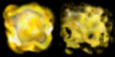
Subdivision Scale （部分スケール）を使って、エミッターが寿命の真ん中ではなく最後に2番目のイメージに徐々にフェード（移行）するようにしました。２つの部分スケールがうまく働くために3番目の部分スケールの設定が必要なときにちょっとした問題がありました。3番目の値は必要なかったのですが、0.000の設定ですと、エクスポートの際に保存されず、カットとペーストが使えないため0.001に設定しました。 パーティクルシステムがどう見えるかという問題に、カラースケールとフェーディングは本質的に重要です。カラースケールでエミッターが徐々に消えてゆく方法をとったので、フェードインは使っても、フェードアウトは使いませんでした。 Fading と Color Scale の間の重要な違いは、 Fading が絶対時間によるのに対して、 Color Scale が比較時間によることです。この場合には、寿命の最小値と最大値を同じにしましたが、違う値を使うのであれば、全てのパーティクルが同時に同じレートでフェードインしながら、フェードアウトするときには個別のレートでフェードアウトするようになります。後感じたのは、カラースケールのほうがフェーディングより、均一な滑らかな結果を出すというう事です。爆発で使われたカラースケールは、システムが時によって暗すぎたり明るすぎたり感じたときの試行錯誤の結果です。 Color Multiplier （カラー倍器）も小さな範囲設定で使い、 同じテクスチャ上で若干違うカラーを使うことで、爆発に多様性と深みを与えました。スパークのエミッター
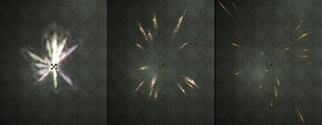
スパーク（火花）のエミッターの場合はもう少し複雑です。まず重要なことはスパークエミッターを使うのではなく、スプライトエミッターを使うということです。パーティクルの、速度、加速度、と向きによって、見てくれが決まります。パーティクルの動き自体は単純ですが、エミッターはその動きに合うように、いくつもの要素を調整します。 このエミッターには17個のパーティクルが使われていて、爆発のときと同じように、Automatic Initial Spawning （自動初期誕生）をOff に、秒あたりパーティクル数をかなり多くに設定しました。 Respawning of Dead Particles （死んだパーティクルの再誕生）も Disabled （不有効）に設定しました。理由は明確ですが、パーティクルの寿命は大変短いです。重要なことは、この場合、Collision （衝突）を Enabled （有効）に設定しておくことです。 Damping 効果はデフォルトのままにしておきました。複雑ではありませんが見た感じの効果は絶大です。 パーティクルの速度は最小値と最大値の間の幅を持たせて、あらゆる方向に向かってパーティクルが飛んでゆくようにしました。値を0を境にXとYに関して対称にしたので、このシステムは特定の方向への傾きは有りません。Z値は、下方向への重力をかんがみて、対称ではなくしました。Zの対称な値設定の場合に、正確ではあるかもしれませんが、実際に見た感じが落ちすぎのようになります。Acceleration （加速度）のZ値の設定は、重力を模倣して、大きな値になっています。これは、Unreal ワールドの重力に対応するものではなく、単に見た感じがあっているように調整されています。 このエミッターからのパーティクルが、瓦礫の塊が飛んでいるのではなく、スパーク（火花）のように見せるために Facing Direction （面の向き）を カメラに向かっての動きの向きに合わせました。つまり、テクスチャの上面が常にパーティクルの動く方向を向いた状態で、パーティクルは回転します。パーティクルは同時にカメラを向くように努力しますが、角度によっては難しく、パーティクルの動く方向を向いているときは困難です。 爆発エミッターのようにこのエミッターも Color Scale、 Color Multiplier Range、 Size Scale、 Size Range を使います。これらが皆一緒に働いて、インパクト効果の基本である、始めの強いフラッシュがスパークから発せられます。Color Multiplier Range は爆発エミッターのときよりも多様に設けて、スパークの発生時に強いインパクトがあるようにしてあります。 Color Scale を使って、スパークはとても速くオレンジ色に変わり、視覚的支配性を失います。パーティクルはかなり大きなサイズから始まって、すぐに適当なサイズに縮みます。その後はフェードアウトしながら、ゆっくりと小さくなってゆきます。フラッシュが対称的であるより爆発に見えるようにサイズの範囲に幅を持たせました。 Subdivision Blending を使って、エミッターの視覚的効果を改良しました。エミッターの寿命があまりに短いために、ブレンド時間も短く、必須事項ではありえません。個人的には、ブレンドしているときにテクスチャが動いているように見える感じが減り、パーティクルの見た感じがよくなったと感じました。また、テクスチャが終わりのほうで、スプライト上より球状に近くなったように感じました。この効果はサイズスケールを使っては得られません。全体として
これはほとんどの場合によく見える、単純なシステムです。テクスチャメモリーの使用量をさらに減らすこともできますが、テクスチャが、256X256 しかつかっていないことと、DXT5で圧縮されていることをかんがみると、すでにたいした量では有りません。Muzzle Flash （マズル、銃口フラッシュ）
Chris Linder 著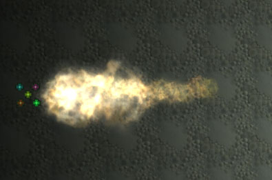
初期の気がかり事項
マズルフラッシュの厄介な点の一つは、普通の状況では、約20分の１秒で終わってしまうことです。肉眼では、このスピードでは、見た感じでいいかまずいかの判断はできても、詳細に何が起こっているかを検索することはできません。ですから、問題があったときに、修正することはとても困難です。この問題を回避するために、私は、まずスローモーションのマズルフラッシュを作成してから、スピードを速め、最終的調整を行いました。スピードの問題に取り組むほかに、最小限の数のパーティクルでシステムを構築することに努力を注ぎました。 何故かというと、銃器からの発砲はやりすぎの効果を起こす可能性が高いからです。オーバードロー（、ビデオカードのフィルター力によって同ピクセルがドローされる数の制限）の問題もあります。初めての人によるゲームの場合に、いくつものアルファイメージがシーンの大部分にドローされる（引かれる）ため、パーティクルシステムはカメラの真前で使用されます。下のイメージのように、たった16のパーティクルでもかなりのオーバードローが見られます。 右側の_イメージは、 Rendering Mode （レンダリングのモード）を Depth Complexity に設定して作成しました。UnrealEd のPerspective Viewport （遠近法、透視図 ビューポート）の右側にあるボタンを押してです。_
右側の_イメージは、 Rendering Mode （レンダリングのモード）を Depth Complexity に設定して作成しました。UnrealEd のPerspective Viewport （遠近法、透視図 ビューポート）の右側にあるボタンを押してです。_
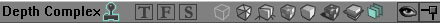
多くのゲームは、第一人者の視界にだけ、単一のスプライトやアニメーションスプライトを使い、他のプレーヤーのためにはパーティクルシステムを使って、この問題を回避します。 遠くから見ると、オーバードローの問題ははたいしたことがありません。何回も描き込まれたエリアがあまり大きくないためです。また、このシステムを横から眺めると、"bang for you buck"（同じお金でより大きな効果が得られる）できます。より大きく見えながら、透明なトライアングルの使用数は同じです。下のイメージで見られます。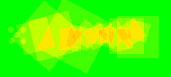
フラッシュエミッター(始めの３つのエミッター)
何でこんなにたくさんのエミッターが？（速度とサイズ）
こんな小さなパーティクルシステムで、そのうちの2つのエミッターはそれぞれ2つのパーティクルだけで構成されている、3つものエミッターを使うのは意外に思えるかもしれません。この理由は、Unreal のパーティクルシステムでは、 Randomize Size （サイズをランダムにする）と指令して、大きなパーティクルがゆっくりと、小さなパーティクルがすばやく動くようにすることができるためです。サイズと速度の両方をランダム化することもできますが、大きなのも小さなのも両方ともランダムには速くなったりゆっくりになったりしてしまいます。この問題は、Unreal で大きなゆっくりのパーティクル様のエミッターと、小さなすばやいパーティクル様のエミッターを別々に作成することで解決できます。このエミッターでは、3つのエミッターを使って、大きくて遅いから小さくて速いの範囲をモデリングしました。正確さをあげたい場合には、エミッターあたりのパーティクル数を減らして、パーティクルエミッターの数を増やすことができます。実際以上にパーティクル数があるように見せるための Texture、 Size Scale、 Rotation の使用
多数のパーティクルを作成するのでゃなく、多数のマズル火炎のかけらがある、単一のテクスチャを使いました。
また、Subdivision Fading と Scale を使って、時間につれて、徐々にテクスチャが薄れてゆく(fade)状態を作成しました（このことに関しての詳しい説明は、「Impact Explosion （インパクト爆発） チュートリアル」をお読みください）。テクスチャ上のかけらが外側に向かって動いているように見えるように、 Size Scale を使って、パーティクルが0のサイズから外側に拡大するように設定しました。 １番大きくて1番遅い1番目のエミッターは、 ２つのSize Scale points を使って、その寿命の間にゼロのサイズからフルサイズに拡大します。2番目のエミッターは、３つのScale pointsを使って、初めに速く拡大し、その後でゆっくりと、寿命が尽きるまで拡大します。1番小さくて1番速い、3番目のエミッターは、 3つのポイントを使って、初めに速く拡大し、その後でゆっくりと縮小します。その他に、全てのパーティクルが Random Rotation と若干の Spin で始まるようにしました。こうすると、まるでテクスチャ上のかけらがお互いに作用し合い、システムから独立して動いているように見えます。こういった要素が絡み合って、多数の小さなかけらから構成された1つのフラッシュが1粒の涙状の形に進化するような印象を与えます。
色とフェーディング
このパーティクルシステムでは、色とフェーディングはあまり複雑では有りません。20分の1秒で終わるパーティクルシステムではフェーディングはあまり問題になりません。少し有ったほうが全然無いより良いかもしれませんが、厳密な価は必要ではありません。基本的には、私は、パーティクルがポップインしてからライフタイムの途中で、フェードアウトするようにしました。Color Multiplier Ranges と Color Scale を調整して、このシステムに適当な色と深みを与えました。Smoke Emitter （煙りエミッター）
 このエミッターはとても単純です。3つの煙のパーティクルで、若干ランダムなスタート地点と初期速度の設定になっています。パーティクルはX初期速度の設定になっていますが、同時に幅広く初期速度が設定されていて、いくつもがガッチリ固まってしまうことなく、動きの向きに合わせて散らばっています。Velocity Loss Range （速度ロス範囲）も使っています。摩擦や空気抵抗によって、ある方向で遅くなっていくようにするためです。 X loss range （X軸のロス範囲）だけを使っているのは、X方向にだけパーティクルの大きな動きがあるためです。1つのフラッシュの中でと、フラッシュとフラッシュの間で、煙が多様性を持って見られるように、 Size Range （サイズ範囲）を大きくしました。
このエミッターはとても単純です。3つの煙のパーティクルで、若干ランダムなスタート地点と初期速度の設定になっています。パーティクルはX初期速度の設定になっていますが、同時に幅広く初期速度が設定されていて、いくつもがガッチリ固まってしまうことなく、動きの向きに合わせて散らばっています。Velocity Loss Range （速度ロス範囲）も使っています。摩擦や空気抵抗によって、ある方向で遅くなっていくようにするためです。 X loss range （X軸のロス範囲）だけを使っているのは、X方向にだけパーティクルの大きな動きがあるためです。1つのフラッシュの中でと、フラッシュとフラッシュの間で、煙が多様性を持って見られるように、 Size Range （サイズ範囲）を大きくしました。
全体として
このパーティクルシステムは、比較的少ないパーティクル数で、なかなかのマズルフラッシュを見せます。このシステムを改良する場合、もしもっとパーティクル数を消費することができるのであれば、煙からスタートすることをお勧めします。もっと長く残り、もっと渦巻く煙を追加するのが、明らかに初めのステップでしょう。多くの自動ライフルにあるベントフラッシュや、銃のチャンバーのフラッシュをこのパーティクルシステムに追加し、2つの別々のオブジェクトがスポーンしないでも良いようにすることもできます。いろいろ改良の余地は有りますが、このままでも良い基本であり参考材料なのではないかと思います。SpotLights （スポットライト）
Lode Vandevenne著 Chris Linderにより更新 このマップでは、スポットごとに LightEffect、 LE_SpotLight、と SpriteEmitter のエミッターを共に使って、体積測定的ライティング効果を作成します。
1番目に1つのエミッターを追加して、Advanced のプロパティーを開き、bDirectional を True にします。つぎに、 Rotation Tool を使って回転させ、矢印がスポットライトのあたる方向を向くようにします。
このマップでは、スポットごとに LightEffect、 LE_SpotLight、と SpriteEmitter のエミッターを共に使って、体積測定的ライティング効果を作成します。
1番目に1つのエミッターを追加して、Advanced のプロパティーを開き、bDirectional を True にします。つぎに、 Rotation Tool を使って回転させ、矢印がスポットライトのあたる方向を向くようにします。
 この回転は2つの目的を持っています：YLightEffect LE_SpotLight にスポットライトの当たる方向を指定する必要があるためと、SpriteEmitter にそのパーティクルの動きの方向を支持するためです。
エミッターに SpriteEmitter を追加して、1番目の絵のようなテクスチャを与えてください。 2番目の絵のずっと暗いバージョンです。このようなくらいテクスチャを炊く差なわせて使うと、とても滑らかなライトコーン（円錐）が作成できます。
この回転は2つの目的を持っています：YLightEffect LE_SpotLight にスポットライトの当たる方向を指定する必要があるためと、SpriteEmitter にそのパーティクルの動きの方向を支持するためです。
エミッターに SpriteEmitter を追加して、1番目の絵のようなテクスチャを与えてください。 2番目の絵のずっと暗いバージョンです。このようなくらいテクスチャを炊く差なわせて使うと、とても滑らかなライトコーン（円錐）が作成できます。
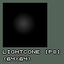
 どの色の スポットライトでも使えるように、テクスチャの色は白にしてあります。単に ColorScale を設定してください。例えば緑のライトであれば、下のColorScale の設定が適切です。
どの色の スポットライトでも使えるように、テクスチャの色は白にしてあります。単に ColorScale を設定してください。例えば緑のライトであれば、下のColorScale の設定が適切です。
 ご覧のように初めのカラーと終わりのカラーが一緒です：パーティクルの 寿命を通して、同じ色で通すことになります。
パーティクルが徐々に消えてゆき、しかも突然現れすぎないように、 Fade In をとても短く Fade Out をとても長く設定しました。また、 Max Particles = 20 (ライトの円錐のサイズによります)に_Start Size_ --> X(Min) と X(Max) = 50 (これもライトの円錐のサイズによります)。 Rotation の中で Use Rotation From を *Actor*に設定してください。エミッターアクタの回転に応じて軸が回転するようにするためです。これは大変重要です。こうしないと、速度の正しい方向の設定が大変難しくなります。 _Size Scale_を次のように設定してください：
ご覧のように初めのカラーと終わりのカラーが一緒です：パーティクルの 寿命を通して、同じ色で通すことになります。
パーティクルが徐々に消えてゆき、しかも突然現れすぎないように、 Fade In をとても短く Fade Out をとても長く設定しました。また、 Max Particles = 20 (ライトの円錐のサイズによります)に_Start Size_ --> X(Min) と X(Max) = 50 (これもライトの円錐のサイズによります)。 Rotation の中で Use Rotation From を *Actor*に設定してください。エミッターアクタの回転に応じて軸が回転するようにするためです。これは大変重要です。こうしないと、速度の正しい方向の設定が大変難しくなります。 _Size Scale_を次のように設定してください：
 この Size Scale でLightCone（ライトの円錐）の作成のためにパーティクルが前に動くにつれて成長するようにします。成長しないと、ライト円柱になってしまいます。 Relative Warmup Time と Warmup Ticks Per Second を両方とも 1 に設定してください。このシステムが温まるのを待たずに済ますためです。ただ単に現れます。個々のライト円錐は、違った LifeTime と違った Start Velocity の設定になっていますが、皆、形は同じです。最も速い青色のシステムは、 LifeTime が 2 に Start Velocity --> X(Min) と X(Max) = 100 になっています。緑色のシステムは青色のより10倍遅く、 Lifetime が 20 で Start Velocity が 10 です。. 赤色のシステムは緑色のより 10 倍遅く、白色のシステムは赤色のより10倍遅く設定されています (このスピードは General.の中の Scale Speed で設定されています) 。パーティクルシステムを近くで吟味すると、特にスポットライトの基部において、スピードの違いによる違いがわかります。青色のシステムのモーションははっきり見え、基部は蛍光灯のようにチラチラしています。緑色のシステムはとてもゆっくりとしたモーションで、パルスするため基部はちょっと変に見えます。この問題は、パーティクル数を増やして、_Opacity_ （不透明度）を減らすことで解決できますが、そうするとレンダリング時間が遅くなります。赤色のシステムではほとんど見えず、パルス頻度も少ないためあまり変には見えません。白色のシステムは止まって見え、100秒にまたがってパルスするためパルスの問題は有りません。
Use Rotation From = Actor の設定を使い、エミッターが正しい方向に回転するようにしたため、パーティクルはスポットライトの動きと共に動き、 すてきな ライト円錐を形成します。
この Size Scale でLightCone（ライトの円錐）の作成のためにパーティクルが前に動くにつれて成長するようにします。成長しないと、ライト円柱になってしまいます。 Relative Warmup Time と Warmup Ticks Per Second を両方とも 1 に設定してください。このシステムが温まるのを待たずに済ますためです。ただ単に現れます。個々のライト円錐は、違った LifeTime と違った Start Velocity の設定になっていますが、皆、形は同じです。最も速い青色のシステムは、 LifeTime が 2 に Start Velocity --> X(Min) と X(Max) = 100 になっています。緑色のシステムは青色のより10倍遅く、 Lifetime が 20 で Start Velocity が 10 です。. 赤色のシステムは緑色のより 10 倍遅く、白色のシステムは赤色のより10倍遅く設定されています (このスピードは General.の中の Scale Speed で設定されています) 。パーティクルシステムを近くで吟味すると、特にスポットライトの基部において、スピードの違いによる違いがわかります。青色のシステムのモーションははっきり見え、基部は蛍光灯のようにチラチラしています。緑色のシステムはとてもゆっくりとしたモーションで、パルスするため基部はちょっと変に見えます。この問題は、パーティクル数を増やして、_Opacity_ （不透明度）を減らすことで解決できますが、そうするとレンダリング時間が遅くなります。赤色のシステムではほとんど見えず、パルス頻度も少ないためあまり変には見えません。白色のシステムは止まって見え、100秒にまたがってパルスするためパルスの問題は有りません。
Use Rotation From = Actor の設定を使い、エミッターが正しい方向に回転するようにしたため、パーティクルはスポットライトの動きと共に動き、 すてきな ライト円錐を形成します。
 ライティング効果のためには：エミッターのプロパティーを展開して、 Lighting --> LightColor の色をパーティクルの Color Scale の色と同じにしてください。そしてand give the light the same color as the color of the Color Scale for the particles. そして、 Lighting の LightType を LT_Steady にLightEffect を LE_SpotLight にLightRadius （ライト半径）を 128 (あなたのマップにとって適切な値)にして、つぎに LightCone を 64 かそこらのお望みのライト効果に合わせた値を入力してください。この値が高いほど、床の上のライトは大きくなります。例えば、1番目のスクリーンショット上では LightCone の値は13です。2番目のスクリーンショットでは、255です。どの値が最高に見せるかは、ライティング効果の体積を測定してのサイズと比べて判断する必要が有ります。
ライティング効果のためには：エミッターのプロパティーを展開して、 Lighting --> LightColor の色をパーティクルの Color Scale の色と同じにしてください。そしてand give the light the same color as the color of the Color Scale for the particles. そして、 Lighting の LightType を LT_Steady にLightEffect を LE_SpotLight にLightRadius （ライト半径）を 128 (あなたのマップにとって適切な値)にして、つぎに LightCone を 64 かそこらのお望みのライト効果に合わせた値を入力してください。この値が高いほど、床の上のライトは大きくなります。例えば、1番目のスクリーンショット上では LightCone の値は13です。2番目のスクリーンショットでは、255です。どの値が最高に見せるかは、ライティング効果の体積を測定してのサイズと比べて判断する必要が有ります。
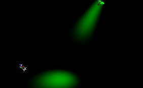
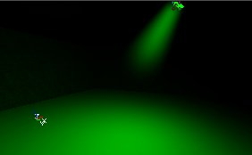
複数の違った色の違った方向のライト効果を演出する場合には、エミッターを複製して、新しいのにお望みの色と方向を与えてください。Breaking Glass （ガラスの壊れる様子）
Lode Vandevenne著 Chris Linder により変更・更新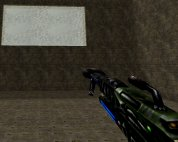

 このマップには窓を現す Mover （ムーバー）が配置されています。撃たれたとき、このムーバーが動き去り、同時に BreakingGlassEmitter （ガラス壊しエミッター）をスポーンするスポーン者を発砲します。このBreakingGlassEmitter はただの SpriteEmitter で、いくつかのプロパティーの設定がされているだけです。ここではあなたが発砲すると、窓全体が爆発します。もし、撃った場所だけ壊れるようにしたければ、窓をいくつかの違ったムーバーを使って作成し、ムーバーがそれぞれスポーン者を有するようにしたりなどの工夫が必要です。
マップ上に武器はありませんが、コンソールで loaded とタイプすれば武器を手に入れて窓を撃つ事ができるはずです。
始めるには SpriteEmitter を窓の真ん中に追加してください。あとで、ここに BreakingGlassEmitter をスポーンするものを追加しますが、今単なるエミッターを配置しておくと、何をしているかをエディターのプレビューで見ることができます。
例マップでは、テクスチャに2X2の subdivisions （部分）があります：
このマップには窓を現す Mover （ムーバー）が配置されています。撃たれたとき、このムーバーが動き去り、同時に BreakingGlassEmitter （ガラス壊しエミッター）をスポーンするスポーン者を発砲します。このBreakingGlassEmitter はただの SpriteEmitter で、いくつかのプロパティーの設定がされているだけです。ここではあなたが発砲すると、窓全体が爆発します。もし、撃った場所だけ壊れるようにしたければ、窓をいくつかの違ったムーバーを使って作成し、ムーバーがそれぞれスポーン者を有するようにしたりなどの工夫が必要です。
マップ上に武器はありませんが、コンソールで loaded とタイプすれば武器を手に入れて窓を撃つ事ができるはずです。
始めるには SpriteEmitter を窓の真ん中に追加してください。あとで、ここに BreakingGlassEmitter をスポーンするものを追加しますが、今単なるエミッターを配置しておくと、何をしているかをエディターのプレビューで見ることができます。
例マップでは、テクスチャに2X2の subdivisions （部分）があります：
 さて、 Number of U-Subdivisions と Number of V-Subdivisions 2に設定されて、_Use Random Subdivision_ はチェックされています。もう破片は皆同じようには見えません。 多色の窓であれば、破片に違った色を割り当てることができます。 また Color Multiplier を使って、色に多様性を持たせることもできますが、これはランダムであるため、コントロールしにくい点があります。パーティクルに多様性を持たせたいのであれば、1から10の間の値に Start Size を設定してください。パーティクルもランダムな回転（モーションではなくオリエンテーション）で始まります。これは、 Spin Particles をチェックして、 Start Spin を0から1の間の値にしたためです。
破片の動きにはAcceleration （加速度）と Velocity （速度）が使われています。方向と軸には、もしこの例と同じようにしたいのであれば、 Advanced の中で bDirectional を 'True' に設定し、矢印が破片を飛んでいかせたい方向になるまで回転させて、 Rotation （回転）の中で Use Rotation From を Actor （アクタ）に設定してください。
Z Accelaration のマイナス値は破片を落ちるようにします。 Start Velocity （初速度）のX値を X(Min) = -60、 X(Max) = 250 に設定すると、破片が皆ほとんど窓の片側に落ちるようになります。もしも両側に落ちるようにしたいのであれば、X(Min) = -250 に設定してください。この速度が高いほど破片は前方に吹っ飛んで生きます。 ですから、ビルの中で大きな爆発がある場合にはずっと高い値を入力することができます。_Start Velocity_ --> Y(Min) = -100、 Y(Max) = 100 ですと、脇より少し遠くに落ちます。そうでなければ、地面に退屈な長方形を描きます。
さてパーティクルをスポーン（誕生）させる場合ですが：まずたくさんのパーティクルが必要です。しかも、窓の中で、ほとんど同時にみなスポーンする必要があります。その後は、もう新しいパーティクルは現れません。 この効果のためには MaxParticles = 1000 と設定してください。窓の大きさによってはもっと高い価が必要です。パーティクル自体は小さいため、フィルレート(fill rate) 問題は有りませんが、すごくたくさんのパーティクルを使うことによって、パフォーマンス上のヒットをかっ飛ばすことができます。 512*256 のウィンドウで真ん中にエミッターを配置する場合には、 Start Location （開始地点）を--> Y(Min) = -256、Y(Max) = 256、Z(Min) = -128、 Z(Max) = 128 に設定してください。
General （全般）の中で Automatic Spawning （自動誕生）のチェックを取り除いて Particles Per Second を設定してください。 ここでは SpriteEmitter が１秒当たり 50,000 パーティクルを作成しようとしますが、MaxParticles = 1000 の最大パーティクル数設定のため、1000 パーティクルだけ0.02秒の間に作成されます。こうすると全てのパーティクルが同時にスポーンしたように見えます。
LifeTime = 10000000 、 Respawn Dead Particles は False に、そして Emitter （エミッター）の Global settings で bAutoDestroy = True と設定されています。こうすると、パーティクルは10000000秒生き続け、その後死にます。そして、再生せずに、エミッターアクタは壊されます。しかし、実際上終わりは着ません。プレーヤーが、10000000秒まっていたら、115日かかってしまいます。この LifeTime の設定が20秒であれば、例えばの値ですが、破片はしばらくすると消えて、パフォーマンスの回復が得られます。
跳ね返って地面にとどまる破片のために Use Collision （衝突を使う）を True （真）に設定してください（こうしないと、床を突き破って落ちていきます）。DampingFactorRange のX Y Zの値を全て1未満に設定してください。パーティクルがXYZ全ての方向に速度と加速度の値が入っているため、こうしないと永遠に動き続けます！ X(Min)とY(Min) = 0.28、 X(Max)とY(Max) = 0.999、 そしてZ(Min) = 0.093、 Z(Max) = 0.309 に設定したときの仕上がりは中々のものです。パーティクルがとても低く跳ね返って、少しの間地上を滑ります。 Movement の中で Min Squared Velocity を 9700 に設定して、パーティクルが止まるときに変に見えないようにしてください。速度が大変遅いときには衝突はあまりうまくいきません。ですから、この設定で、パーティクルがこれより遅い速度のときに衝突が起こらないように動きを止めます。
さあ、これでマップをあけたときに破片を発するが、その後は何もしないエミッターができました。このプロパティーのままのエミッターを、プレーヤーが窓を撃ったときに、スポーンさせたいのであれば、新しくエミッターの subclass を作成してください。名前は例えば BreakingGlassEmitter? （窓割りエミッター）です。このクラスをマップに追加しないでください。代わりに Actor Class Browser の Default Properties を開いてください。このデフォルトが BreakingGlassEmitter がスポーンしたときに使われます。ですから、さっき作成したエミッターのプロパティー（窓に配置したエミッター）をこれにうつしてください。
一番簡単な方法は、窓の中のエミッターのプロパティーを開いて、先に作った SpriteEmitter の名前をコピーし、 BreakingGlassEmitter クラスのデフォルトプロパティーにペーストすることです。そうすると、窓の中のエミッターに与えたプロパティーがうつされるはずです。
さて、 Number of U-Subdivisions と Number of V-Subdivisions 2に設定されて、_Use Random Subdivision_ はチェックされています。もう破片は皆同じようには見えません。 多色の窓であれば、破片に違った色を割り当てることができます。 また Color Multiplier を使って、色に多様性を持たせることもできますが、これはランダムであるため、コントロールしにくい点があります。パーティクルに多様性を持たせたいのであれば、1から10の間の値に Start Size を設定してください。パーティクルもランダムな回転（モーションではなくオリエンテーション）で始まります。これは、 Spin Particles をチェックして、 Start Spin を0から1の間の値にしたためです。
破片の動きにはAcceleration （加速度）と Velocity （速度）が使われています。方向と軸には、もしこの例と同じようにしたいのであれば、 Advanced の中で bDirectional を 'True' に設定し、矢印が破片を飛んでいかせたい方向になるまで回転させて、 Rotation （回転）の中で Use Rotation From を Actor （アクタ）に設定してください。
Z Accelaration のマイナス値は破片を落ちるようにします。 Start Velocity （初速度）のX値を X(Min) = -60、 X(Max) = 250 に設定すると、破片が皆ほとんど窓の片側に落ちるようになります。もしも両側に落ちるようにしたいのであれば、X(Min) = -250 に設定してください。この速度が高いほど破片は前方に吹っ飛んで生きます。 ですから、ビルの中で大きな爆発がある場合にはずっと高い値を入力することができます。_Start Velocity_ --> Y(Min) = -100、 Y(Max) = 100 ですと、脇より少し遠くに落ちます。そうでなければ、地面に退屈な長方形を描きます。
さてパーティクルをスポーン（誕生）させる場合ですが：まずたくさんのパーティクルが必要です。しかも、窓の中で、ほとんど同時にみなスポーンする必要があります。その後は、もう新しいパーティクルは現れません。 この効果のためには MaxParticles = 1000 と設定してください。窓の大きさによってはもっと高い価が必要です。パーティクル自体は小さいため、フィルレート(fill rate) 問題は有りませんが、すごくたくさんのパーティクルを使うことによって、パフォーマンス上のヒットをかっ飛ばすことができます。 512*256 のウィンドウで真ん中にエミッターを配置する場合には、 Start Location （開始地点）を--> Y(Min) = -256、Y(Max) = 256、Z(Min) = -128、 Z(Max) = 128 に設定してください。
General （全般）の中で Automatic Spawning （自動誕生）のチェックを取り除いて Particles Per Second を設定してください。 ここでは SpriteEmitter が１秒当たり 50,000 パーティクルを作成しようとしますが、MaxParticles = 1000 の最大パーティクル数設定のため、1000 パーティクルだけ0.02秒の間に作成されます。こうすると全てのパーティクルが同時にスポーンしたように見えます。
LifeTime = 10000000 、 Respawn Dead Particles は False に、そして Emitter （エミッター）の Global settings で bAutoDestroy = True と設定されています。こうすると、パーティクルは10000000秒生き続け、その後死にます。そして、再生せずに、エミッターアクタは壊されます。しかし、実際上終わりは着ません。プレーヤーが、10000000秒まっていたら、115日かかってしまいます。この LifeTime の設定が20秒であれば、例えばの値ですが、破片はしばらくすると消えて、パフォーマンスの回復が得られます。
跳ね返って地面にとどまる破片のために Use Collision （衝突を使う）を True （真）に設定してください（こうしないと、床を突き破って落ちていきます）。DampingFactorRange のX Y Zの値を全て1未満に設定してください。パーティクルがXYZ全ての方向に速度と加速度の値が入っているため、こうしないと永遠に動き続けます！ X(Min)とY(Min) = 0.28、 X(Max)とY(Max) = 0.999、 そしてZ(Min) = 0.093、 Z(Max) = 0.309 に設定したときの仕上がりは中々のものです。パーティクルがとても低く跳ね返って、少しの間地上を滑ります。 Movement の中で Min Squared Velocity を 9700 に設定して、パーティクルが止まるときに変に見えないようにしてください。速度が大変遅いときには衝突はあまりうまくいきません。ですから、この設定で、パーティクルがこれより遅い速度のときに衝突が起こらないように動きを止めます。
さあ、これでマップをあけたときに破片を発するが、その後は何もしないエミッターができました。このプロパティーのままのエミッターを、プレーヤーが窓を撃ったときに、スポーンさせたいのであれば、新しくエミッターの subclass を作成してください。名前は例えば BreakingGlassEmitter? （窓割りエミッター）です。このクラスをマップに追加しないでください。代わりに Actor Class Browser の Default Properties を開いてください。このデフォルトが BreakingGlassEmitter がスポーンしたときに使われます。ですから、さっき作成したエミッターのプロパティー（窓に配置したエミッター）をこれにうつしてください。
一番簡単な方法は、窓の中のエミッターのプロパティーを開いて、先に作った SpriteEmitter の名前をコピーし、 BreakingGlassEmitter クラスのデフォルトプロパティーにペーストすることです。そうすると、窓の中のエミッターに与えたプロパティーがうつされるはずです。
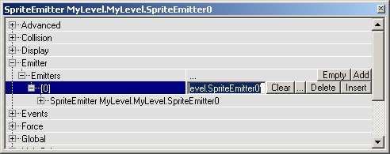
また、 BreakingGlassEmitter に同じ Global 設定を与えてください。そして Movement の中に、窓の中のエミッターと同じに同じ Rotation （回転）を設定してください。これで、窓の中のエミッターを削除することができます。代わりに BreakingGlassEmitter をスポーンする ThingFactory を配置してください。例として掲載されているマップの中では、この ThingFactory は BreakingGlassSpawner という名の、下記のコードの単純なクラスです：
class <nop>BreakingGlassSpawner extends Emitter;
function trigger(actor Other, pawn <nop>EventInstigator)
{
Spawn(class'mylevel.BreakingGlassEmitter');
}
しかし、もちろんこの短いコードは完璧ではありません。
この BreakingGlassSpawner を窓の中心に配置して（先のエミッターがあったところです、）例えば glass という名の Tag （タグ）を与えてください。これで、例となっているマップ上で、 2つの クラスができました。スポーンされる BreakingGlassEmitter と、引き金を引かれたときにこの BreakingGlassEmitter をスポーンする BreakingGlassSpawner (窓割りエミッターのスポーン者）です。
次に Mover (ムーバー)を窓の中に配置してください。撃たれる前のガラスを代表します。このムーバーの Key1 をマップ外に設定し、 Mover properties の中で、bDamageTriggered = True に MoveTime = 0 に bTriggerOnceOnly = True に、そして Object の中で InitialState = TriggerOpenTimed に、 Event の中で "glass" という名の BreakingGlassSpawner に Event と設定してください。.
これで、このムーバーは、撃たれたときに、スポーン者を起動させ、スポーン者は、窓割りエミッターをスポーンし、結果として、窓を撃ち割ったように見えます。
Spooky Hell's Lightning （気味の悪い地獄の雷）
Epic Games 著、本文は、 Chris Linder 著 これはかなり複雑な雷の例です。枝上ビームを3つのビームエミッターを用いて構成し、1つのスプライトエミッターを使ってソースマーク（原点の設定）を行い、もう1つのスプライトエミッターを使って、雲光効果を出しながらシステム全体の遅延タイマーとして働かせています。
これはかなり複雑な雷の例です。枝上ビームを3つのビームエミッターを用いて構成し、1つのスプライトエミッターを使ってソースマーク（原点の設定）を行い、もう1つのスプライトエミッターを使って、雲光効果を出しながらシステム全体の遅延タイマーとして働かせています。
グローバルのオフセット/リセット
このパーティクルシステムで一番奇妙なことは、_GlobalOffsetRange_によって、オフセットされていることです。_GlobalOffsetRange_はパーティクルシステム全体の設定です（Unreal は "Emitters"（エミッター）と読んでいますが、私たちは、"particle systems"（パーティクルシステム）と呼んでいます）。ですから、個々の、スプライト、スパーク、ビームやメッシュエミッターのプロパティーは、_Particle System Editor_では見つかりません。これらの設定は、Particle System （パーティクルシステム）をダブルクリックして_Global_ を展開すると見つかります。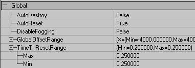
この雷はZを０にしたまま、XとYを -4000 から 4000 の範囲に設定しています。つまり、個々のエミッターの原点_(X=0, Y=0, Z=0)_は設定した範囲の分だけ動かされるということです。 これらにおいて重要な点は、雷とソースマークが同じランダム地点で作成されることです。ほかの方法としては、_Location_ の中の Add Location From Other Emitter の設定を使うこともできます。 この_GlobalOffsetRange_ は0.25秒毎にリセットされます。これは TimeTillResetRange で指定されています。 TimeTillResetRange はこの GlobalOffsetRange だけでなくパーティクルシステム全体をリセットします。全てのエミッターにおいて Respawn Dead Particle is チェックなしの空白になっています。システムが続くただひとつの理由はリセットです。また、個々で述べておきたいのは、全てのパーティクルが死んだ後でないとシステムはリセットしないという事です。もし Respawn Dead Particle のボックスがチェックされていると、このシステムは新しい地点に移ることができません。 TimeTillResetRange によって、パーティクルシステムをタイマーのように使うことができます。全てのシステムが死んだ後でないと、どのシステムもリセットしないからです。このケースでは、雲光効果がタイマーの役割を果たします。一番永く続くからです。Lifetime （寿命） が何というか偶発的であるため、雷にランダムな感じを与えます。このほかの方法として、 TimeTillResetRange に大きな値を与えて、タイマーシステムを使わないで済ますこともできます
Beam （ビーム）
beam branching （ビームの枝分かれ）の詳しい説明はは ParticleSystems （パーティクルシステム）に記述されています。雷はこの文書で考察されている3つのレベルで枝分かれして、ランダム性を増し小さくなって行く例と、大変よく似ています。 ビームの色は、このエミッターではまれな単純な要素です。それぞれのビームは、速いフェードインと遅いフェードアウトに設定されています。それぞれのビームはすばやいフェードインとゆっくりしたフェードアウトの設定になっています。そして、色は color scale を使って、ほとんど白色 (255, 251, 255) から黄色ぽい色 (238, 185, 62) になっています。それぞれのビームのテクスチャは異なりますが、皆白色で、幅がせまく、少し波打っています。メインのビームから一番下のブランチ（枝）に移行するにつれ、さらに細くなります。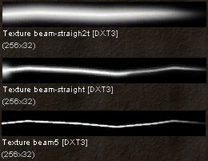
これがメインのビームがどっしりと明るく見えるのにブランチが小さく小枝っぽくに見える理由です。ビームのサイズは皆同じに設定してあり、テクスチャによってサイズの調整をしています。
Source Mark（ソース マーク）
Facing Direction を Normal に設定することによって、このエミッターのパーティクルはカメラを向かずに、地面に沿って配置調整されています。このエミッターは 3x3 Subdivision の Texture をつかい、 Subdivisions 間でフェードしあうことによって爆発タイプの効果を得ています。 Particles Per Second で全てのパーティクルが同時にスポーンするようにすることで、さらに効果をあげています。
size scale の使って、パーティクルがそそのライフタイムの中で拡大するようにし、爆発効果に貢献しています。最後に、color scale を使って、パーティクルがフェードアウトするときに赤色っぽくなるようにしてあります。パーティクルのライフタイムはビームの時のように多様です（0.25から0.5秒の間）。
Cloud Light Effect (雲光効果）
雲光効果はなかなか面白い効果です。前述したように、雷がひきりなしに落ち続けないように、システムタイマーの役割を果たします。そのほかに雲の中に雷と雷の間のフラッシュではっきり見えない雷があるような印象を与えます。パーティクルのライフタイムは2から3秒の間で、雲が光るだけでなく、フラッシュが偶然発されているように見えます。パーティクルの色は、Color Scale で始め眩く、すばやくぼやけた色にフェードアウトし、スケールの残りで透明になってゆきます。このスケールを3回繰り返すことで、雲が雷のようにフリック（パチパチ）した感じになります。パーティクルもまたフェードアウトしてゆくため、最後のほうのフリックは初めのよりも明るくありません。このシステムには3つのパーティクルが使われていて、フリックの周期も3回あらわれます。25から200の Size Scale の設定によって、パーティクルはそのライフタイムの間で、初めよりずっと大きくなって行きます。Ground Fog（地上の霧）
Chris Linder著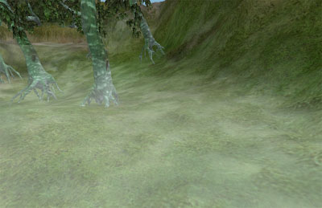
この地上の低い霧はとても単純なパーティクルシステムです。18のパーティクルを Vertical Normal（垂直方向に正規）の配置ぞろえ設定にして有ります。 Rotation の Facing Direction を Specified Normal にし、 Projection Normal を (X=0, Y=0, Z=1)に設定してあります。_Use Rotation From_ をにすることで、環境にあわせて、ワールドの中で、パーティクルシステムが回転することができるようになっています。この場合には、 Start Location Box はY方向 (+- 25) よりX方向 (+/- 1400) に長くなっています（なお、システムの深みを増すために Z に若干のバリエーション_(+/- 5)_が加えられています ）。このパーティクルシステムは、どの軸にも沿っていない谷にうまくはまるように回転調整がされています。 このパーティクルは、アルファテクスチャを使い、そして Draw Style が Alpha Blend に設定されています。テクスチャ自体がかなり不透明な中心をもっているので、システムの _Opacity_ （不透明度）は 20% という低い値で、風景全体を真っ白に染めないようにしてあります。このパーティクルもフェードインしフェードアウトするようになっていますが、ライフタイムのほとんどの間はフェード（薄れる）しません。このパーティクルも 、X と Y = +/- 825の、 かなり大きいサイズ設定になっています。このテクスチャが大きなエリアを覆うようにするためです。
この地上霧のパーティクルのライフタイムは、２０秒に設定してあります。フェーディングが皆ゆっくりで、あまり気づかれないようにするためです。また、 Relative Warmup Time と Warmup Ticks Per Second = 1 に設定してこのシステムのウォームアップに気がつかないように設定してあります。そして全ての動きをゆっくりに設定することで､突然のギョッとするような現象にならないようにしてあります。パーティクルの速度設定は、XとYの Start Velocity は +/- 2.5、 Z Velocity は min=1、 max=3.5にしてあります。そして random rotation で始まり、 Spins Per Second は min=0.05, max=0.08 にしてあります。こういったことが絡み合って、緩やかに渦巻いてかぶさってゆく霧のシステムになっています。
パーティクルシステムで霧を作成する場合の大きな問題はオーバードローです_(ビデオカードのフィルター機能によって限定される、同ピクセルがドローされる制限)_。このシステムの場合は少数の大きなパーティクルを使うため、オーバーラップが少なく、あまり問題ではありません。
このパーティクルは、アルファテクスチャを使い、そして Draw Style が Alpha Blend に設定されています。テクスチャ自体がかなり不透明な中心をもっているので、システムの _Opacity_ （不透明度）は 20% という低い値で、風景全体を真っ白に染めないようにしてあります。このパーティクルもフェードインしフェードアウトするようになっていますが、ライフタイムのほとんどの間はフェード（薄れる）しません。このパーティクルも 、X と Y = +/- 825の、 かなり大きいサイズ設定になっています。このテクスチャが大きなエリアを覆うようにするためです。
この地上霧のパーティクルのライフタイムは、２０秒に設定してあります。フェーディングが皆ゆっくりで、あまり気づかれないようにするためです。また、 Relative Warmup Time と Warmup Ticks Per Second = 1 に設定してこのシステムのウォームアップに気がつかないように設定してあります。そして全ての動きをゆっくりに設定することで､突然のギョッとするような現象にならないようにしてあります。パーティクルの速度設定は、XとYの Start Velocity は +/- 2.5、 Z Velocity は min=1、 max=3.5にしてあります。そして random rotation で始まり、 Spins Per Second は min=0.05, max=0.08 にしてあります。こういったことが絡み合って、緩やかに渦巻いてかぶさってゆく霧のシステムになっています。
パーティクルシステムで霧を作成する場合の大きな問題はオーバードローです_(ビデオカードのフィルター機能によって限定される、同ピクセルがドローされる制限)_。このシステムの場合は少数の大きなパーティクルを使うため、オーバーラップが少なく、あまり問題ではありません。
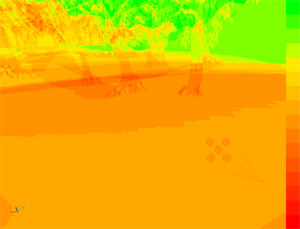
しかし、やはり考察すべきオーナードローの問題が残っています。パーティクルシステムで霧を作成する方は、この点を考慮する必要があります。
Waterfall （滝）
Chris Linder 著 この例はかなり複雑で、レンダリング時間をたくさん使うという意味で高くつく方法です。しかし、同時に、ほとんど全てのシートがベースになっている滝（安い滝の作成方法）よりも、よく見え、より柔軟性があります。滝の前にいることも、横にいることも、見上げることもできます。
この例はかなり複雑で、レンダリング時間をたくさん使うという意味で高くつく方法です。しかし、同時に、ほとんど全てのシートがベースになっている滝（安い滝の作成方法）よりも、よく見え、より柔軟性があります。滝の前にいることも、横にいることも、見上げることもできます。


 この効果は3つのエミッターで構成されています。１番目は滝そのもの。2番目は滝が落ちて撃つ水面。3番目は滝の周りを包むもやっとした霧です。
この効果は3つのエミッターで構成されています。１番目は滝そのもの。2番目は滝が落ちて撃つ水面。3番目は滝の周りを包むもやっとした霧です。
The Falls （滝）
滝は4つのエミッターで構成されています。落ちてくる水のほとんどを構成する'main water' （メインの水）のエミッター。手前にあり、密度が薄めで、より速いレートで落ちてきて違った速さの違った層である感じを与える、 'fast water' （速い水）。滝の端や周りの水滴を表す、 'drops' エミッター。横から見て、その滝が薄い水のシートに見えないようにする 'side water' （横の水）エミッターのシステム。 main water' システムは、29のアルファスプライトで構成されています。そのテクスチャは、 2x1の Subdivision Texture （部分分割テクスチャ）で、スプライト毎に Random Subdivision （ランダム部分分割）が選ばれています。 Blend Between Subdivisions を使うほうが正しい方法かもしれませんが、それではなぜか、アルファやフェーディングの場合にうまくいきません。下に行くにつれて、テクスチャが変化すると、よりよく見えるはずですが、フェイディングはもっと重要です。パーティクルは、両側にアルファ値が、間に2つの非アルファ値が設定された、color scale （カラースケール）でフェードします。このフェーディングではなくカラースケールを使うという選択の理由は、カラースケールがパーティクルに応じて計算されるのに対して、フェーディングが絶対時間を元に計算されるためです。一時期、パーティクルごとに違ったライフタイムの設定をしていたためこうすることが必要でしたが、今は全て2.5秒のライフタイムに設定してあるため、この事は重要ではありません。つまり、フェーディングが使えたわけです。テクスチャは、_Color Multiplier_ の設定で、青みを帯びるようになっています。これらの設定は、遅い午後のライティングに、青で暗くし陰りををつけて、このレベルにあっているように思います。 テクスチャ自体はかなり大きく (256x512) 、テクスチャメモリを保存する場合には、圧縮してもあまり質の低下はありません。テクスチャが純白でないということを認識することが重要です。テクスチャの色にバリエーションがないため、水が平たく見え、納得がいきませんでした。ちょっと色を変えることで水の見た感じがグーンと良くなりました。下にテクスチャのRGB 、アルファチャンネル、 UnrealEd でこのテクスチャがどのように見えるかを掲載しました。
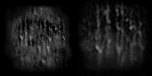
 このシステムは、アクタとアライン（配置ぞろえ）されているため、環境に合わせて簡単に回転できます。滝の幅は、 Start Location Box のY range 値によって設定されていて、この場合は、約+/- 133です。この開始地点のXZ値は0に設定されています。全てのパーティクルは同じ速度で始まり、これは外側にほとんど向かって (X = 242）いて、 若干落ちます（Z = -60）。_Acceleration_ （加速度）は下方向に約 Z = -800の度合いです。パーティクルが速く落ちて動くようになるにつれ、_Facing Direction_ が Along Movement Facing Normal の設定になっているため、長く細くなって行きます。細くなってゆくのを相殺するため、 size scale を使って、時間毎に大きくなってゆくように設定してあります。このスケールの最終サイズは、システムのサイズが変わらないようになるまで、ひねくりました。これはもちろんパーティクルが落ちるにつれて、垂直方向に余計に伸びる結果となり、見た感じが良くなりました。パーティクルの開始サイズは、 X とY についてはほとんど同じながら少し違う値で、 X = +/-140 、 Y = +/-134です。このパーティクルは、_Facing Direction_ as Along Movement Facing Normal の設定のため、スピンしません。スピンはパーティクルに変な効果を与えます。.
fast water' は 'main water' を複製して、_General_ の中の Scale Speed tool を使って、システムを速くしています。そして、_Start Location Offset_ によって、エミッターを少し、上や前に動かしています。このエミッターのパーティクル数は少なめで、_Start Size_ が微妙に違います。また、 Start Size の設定によって、速いパーティクルが端に現れて、明らかに単独のスプライトには見えないようになっています。
drops' エミッターも 'main water' を複製して、システムを速めて作成しましたが、 'fast water' ほど速くはありません。テクスチャが異なり、不透明どの高い小さな水滴がたくさんあります。このシステムも、 Start Size と Start Location Box が少し調整されていますが、大きな違いは、これらのパーティクルに若干のスピンが与えられていることです。このスピンでは、 Facing Direction が Along Movement Facing Normal と設定されているため、スプライトの正規にはスピンしませんが、他の軸で、上に外に現れます。これは滝から生じるランダム（偶然）な水滴としては都合よく、もう滝の面からは独立しています。
side water' エミッターも 'main water' の複製ですが、 Facing Direction が*Along Movement Facing Camera* に設定されています。こうすると、滝の横から見た具合が良くなります。 この Facing Direction は Size Scale のようにパーティクルを伸ばさず、エミッターからはずされています。 Start Size には工夫を凝らして、システムが横からもうまく動くようになっていながら、前方から見たときに目障りにはなりません。もしも、横から見ることがない滝を扱っているのでしたら、このパーティクルを保存して、このシステムは Disable （無効）にしてください。
このシステムは、アクタとアライン（配置ぞろえ）されているため、環境に合わせて簡単に回転できます。滝の幅は、 Start Location Box のY range 値によって設定されていて、この場合は、約+/- 133です。この開始地点のXZ値は0に設定されています。全てのパーティクルは同じ速度で始まり、これは外側にほとんど向かって (X = 242）いて、 若干落ちます（Z = -60）。_Acceleration_ （加速度）は下方向に約 Z = -800の度合いです。パーティクルが速く落ちて動くようになるにつれ、_Facing Direction_ が Along Movement Facing Normal の設定になっているため、長く細くなって行きます。細くなってゆくのを相殺するため、 size scale を使って、時間毎に大きくなってゆくように設定してあります。このスケールの最終サイズは、システムのサイズが変わらないようになるまで、ひねくりました。これはもちろんパーティクルが落ちるにつれて、垂直方向に余計に伸びる結果となり、見た感じが良くなりました。パーティクルの開始サイズは、 X とY についてはほとんど同じながら少し違う値で、 X = +/-140 、 Y = +/-134です。このパーティクルは、_Facing Direction_ as Along Movement Facing Normal の設定のため、スピンしません。スピンはパーティクルに変な効果を与えます。.
fast water' は 'main water' を複製して、_General_ の中の Scale Speed tool を使って、システムを速くしています。そして、_Start Location Offset_ によって、エミッターを少し、上や前に動かしています。このエミッターのパーティクル数は少なめで、_Start Size_ が微妙に違います。また、 Start Size の設定によって、速いパーティクルが端に現れて、明らかに単独のスプライトには見えないようになっています。
drops' エミッターも 'main water' を複製して、システムを速めて作成しましたが、 'fast water' ほど速くはありません。テクスチャが異なり、不透明どの高い小さな水滴がたくさんあります。このシステムも、 Start Size と Start Location Box が少し調整されていますが、大きな違いは、これらのパーティクルに若干のスピンが与えられていることです。このスピンでは、 Facing Direction が Along Movement Facing Normal と設定されているため、スプライトの正規にはスピンしませんが、他の軸で、上に外に現れます。これは滝から生じるランダム（偶然）な水滴としては都合よく、もう滝の面からは独立しています。
side water' エミッターも 'main water' の複製ですが、 Facing Direction が*Along Movement Facing Camera* に設定されています。こうすると、滝の横から見た具合が良くなります。 この Facing Direction は Size Scale のようにパーティクルを伸ばさず、エミッターからはずされています。 Start Size には工夫を凝らして、システムが横からもうまく動くようになっていながら、前方から見たときに目障りにはなりません。もしも、横から見ることがない滝を扱っているのでしたら、このパーティクルを保存して、このシステムは Disable （無効）にしてください。
Waterfall Base Splash （滝の基部スプラッシュ）
滝の基部でのスプラッシュはは2つのエミッターで構成されています。1つはメインとなるスプラッシュ用。もうj1つはメインの水の端の小さな水滴用です。スプラッシュ効果全体が、その中心に凝縮される小さな水滴で構成されているかのようにデザインされています。メインとなる、水を跳ね返すエミッターは、2つのランダムに選択された Subdivisions を持つ凝縮したテクスチャを使っています。
これら同士で、ブレンドしあうことが望まれますが、前述したように、ブレンドはアルファとはうまく行きません。このテクスチャはアルファテクスチャで、基部スプラッシュを横から見たときに、より明るくはなりません。もし Draw Style が Translucent または Brighten に設定されていればより明るくなります。この水滴のテクスチャは：
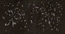
また、 Subdivision と Alpha Blend を同じ理由で使います。水滴は、理由は明らかですが、密度がかなり薄く、テクスチャの中心に凝縮されることがありません。密度の濃いテクスチャのメインエミッターは、水滴エミッターに比べるとパーティクル数が多く44もあります。 メインエミッターは Opacity が 40% です。こうすると、システムのバランスが良くなり、その中心を白色で覆ってしまうことがありません。メインテクスチャと水滴テクスチャのもう1つの違いは、メインスプラッシュのパーティクル（Size = 106）の方が、水滴システムのパーティクルより (Size = 66)ずっと大きい事です。. 両エミッターとも、パーティクルをスピンして、ランダムな回転で始めることによって、水滴がたくさんの水滴が集まった1つのテクスチャではなく、１滴１滴の水滴であるように見せます。_Facing Direction_ を Facing Camera にしているのは、スプラッシュがある種の体積であるはずなためです。いつもカメラを向いている設定が一番論理的です。I Start Location Box を使って、パーティクルを滝の基部で一列に配置してあります。このシステムは、_Use Rotation From_ が Actor に設定されていて、滝の基部などのものに合うように、ワールドの中で簡単に回転できます。パーティクルは主にY軸 (Y = +/- 155) に沿って始まり、 X 軸 (X = +/- 25) に若干の遊びがあります。_Start Location Offset_ (Z=-150) を使って、スプラッシュが水面下で始まるようになっています。こうすることによって、パーティクルが部分的に水上に見えるようになってからフェードインが始まります。パーティクルが皆水上に現れてから、フェードインするのであれば、もうすでにこのシステムにとっての問題になっていますが、余計に1つのスプライトが現れたかのように見えてしまいます。 両エミッターのパーティクルとも、すばやく上 (+Z) に、そして少し外 (+/- Y) に、そしてちょっと前 (+X) にまで動き始めます。水滴は、メインのスプラッシュより少し速く上に、ずっと早く外に動きます。 Z 方向の Acceleration （加速度）(Z=-1260) はこのパーティクルの動きに重要な働きをしています。パーティクルは皆 Lifetime が 0.9 秒に設定されていて、フェードアウトする前に遅くなり、落ち始めるための時間がぎりぎり有ります。 このパーティクルシステムでのフェーディングは必要以上に複雑かも知れません。_Color Scale_ と alpha を使って フェードインし、少しの間フルブライトでいた後、フェードアウトします。_Fading_ はまた、パーティクルのライフタイムの終わりに、フェードアウトの率を上げるために使われています。_Fade-Out Start Time_ を_Color Scale_ でフェードアウトする途中に設定してです。単に Fading 岳を使っても良く、見たkんじも問題ないのですが、このように2つの違ったフェーディングレートをかみ合わせて使うことができることを述べるのは意味のあることだと思います。